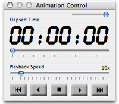

Using Ascent's animation features
Ascent has an integrated automation engine that drives real-time updates in the Main Browser, Activity, and Map Views. A floating control panel (shown below) provides transport controls to start, stop, fast forward, rewind, and play in reverse all open activities.
Elapsed activity time is shown in the large time display. Below the time display is a slider that can be used to set the current playback time.
The Activity and Map Views can display "heads-up" displays of activity data such as speed and heart rate that update dynamically as the animation proceeds.

See also
Using the Main Browser
Using the Activity View
Using the Map View